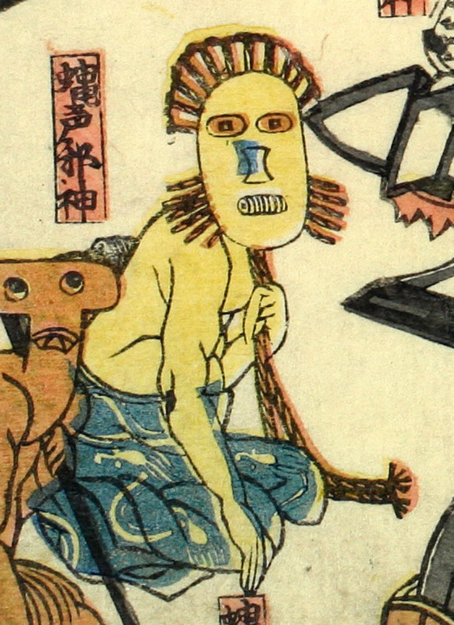

蝿声邪神；サバエナスアシキカミ，貨幣；カヘイ

黄金色の蝿声邪神。上半身裸で、頭部は大判、目が百文銭、口が銭貨である。
著作者：江戸川北輝／出典：親書誌：U426_nichibunken_0074：本朝振袖之始素盞鳥尊妖怪降伏之圖；ホンチョウフリソデノハジメスサノオノミコトヨウカイゴウフクノズ／日付：2005／資源識別子：U426_nichibunken_0074_0005_0000
Copyright (c)2010- International Research Center for Japanese Studies, Kyoto, Japan. All rights reserved.